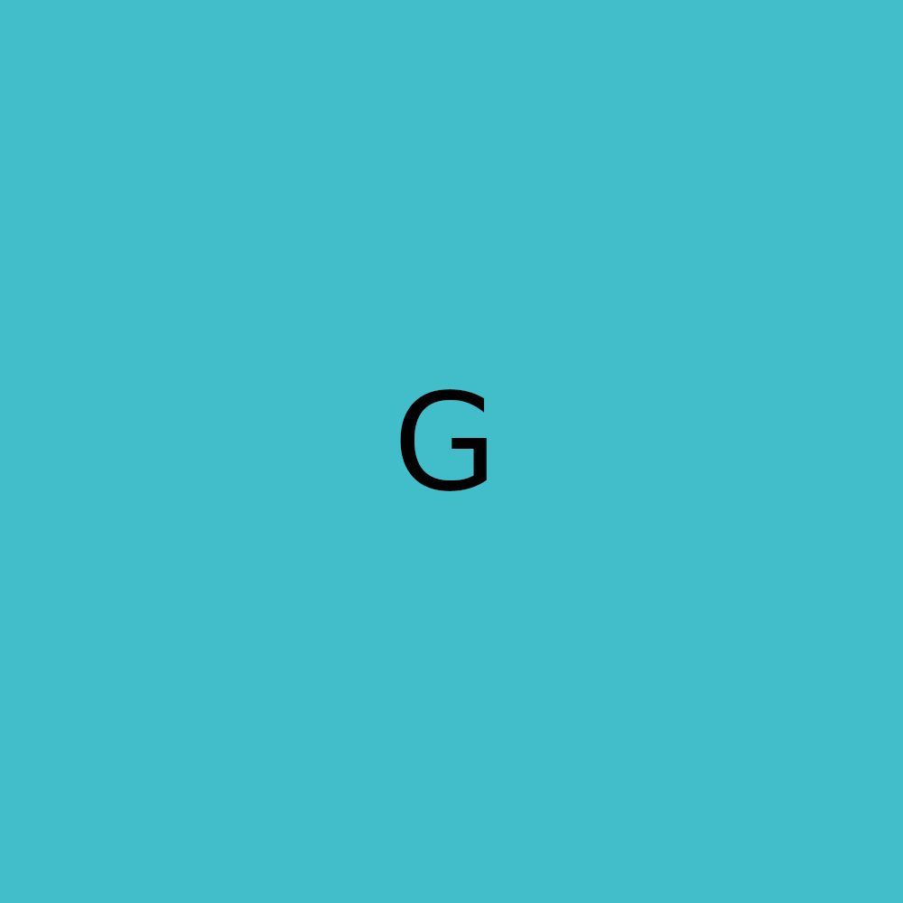

Podemos adicionar imagens por meio de link, diretamente dos navegadores ou por nossas pastas, neste exemplo irei usar uma externa.
Links internos e externos
Os links são conexções entre paginas sites, funcionam como ponte, eles podem ser usado de forma interna ou externa na sua aplicação web, como o link de outras paginas sua, ou link externos de pagina de terceiros
O link abaixo, é um link externo e te levará para o site que peguei essa imagem acima como referência.
O link abaixo é um link interno que te levará para minha segunda página.
Links para donwload
O método do donwload tratasse de indexsarmos um conteudo com o tipo donwload no link para que quando clicado, se inicie o donwload de um determinado conteudo.
O conteudo pode ser do tipo texto, audio, imagem, arquivos xip dentro outros.
Aqui abaixo vai um link de donwload de uma foto, ela estará em formato .ZIP
Imagem dinamica
A imagem dinamica se reajusta de acordo com a resolução da tela do usuario

Tocando audio
è possivel adicionar audio ao site de uma maneira muito simples